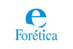
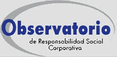
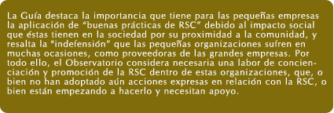
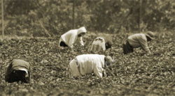

6.- COMPROMISOS Y NORMAS DE RSC.
6.1.- la responsabilidad corporativa en España.
En España la iniciativa política del grupo parlamentario de Convergencia i Unión institucionaliza en 2001, en el Congreso de los Diputados, la aprobación de la propuesta para la creación de una Subcomisión de Responsabilidad Social Corporativa.
El nacimiento de esta Subcomisión se plantea como ”un espacio de encuentro” de todos los sectores implicados, empezando por las empresas, pero también los profesionales, las asociaciones de consumidores y las organizaciones sociales, lo que se materializa posteriormente con la Resolución del Congreso de los Diputados en el año 2003, que aprueba entonces el Gobierno, y da lugar a la creación de una Comisión de Expertos, en septiembre de 2004, para empezar a discutir el tema de la RSC. En el año 2005 esta Comisión se desdoblo en tres iniciativas paralelas o grupos de trabajo.
De esta forma, España se alinearía con las recomendaciones del Libro Blanco de la UE de 2000, con las conclusiones de la Cumbre de Lisboa y el Libro Verde, y de hecho los responsables de esta iniciativa afirmarían que los trabajos de la Subcomisión, y los que pudiera llevar a cabo el Gobierno, podrían convertirse en referencia para la Unión Europea.
Las iniciativas son las siguientes:
- La primera iniciativa es el macro estudio que patrocina la Fundación de Estudios Financieros, FEF, casi por encargo del entonces, y hoy candidato a Alcalde de Madrid, director de la Oficina Económica del Gobierno, Miguel Sebastián.La FEF ha convocado para discutir sobre esta propuesta a entidades como el IESE, el Club de Excelencia en Sostenibilidad, la Fundación Entorno, la Fundación Empresa y Sociedad, Uría y Menéndez Abogados.
- La segunda iniciativa de gran calado en España es la de Forética. La asociación fomenta políticas de gestión ética y socialmente responsable en empresas e instituciones como parte de sus valores corporativos y promueve sistemas de gestión verificables. En la actualidad, la organización cuenta con más de 150 asociados, 92 de los cuales son empresas que se han comprometido a la implantación de un código de conducta. Esta herramienta de gestión recién actualizada que supone establecer unos estándares muy altos en las relaciones con sus proveedores, clientes, medio ambiente y demás grupos de interés implicados.
- La tercera iniciativa es la propuesta por la Universidad de La Coruña que pone en marcha una Cátedra sobre Responsabilidad Social Corporativa que llevará el nombre de Inditex. La cátedra inició su actividad con un acto inaugural que se desarrolló el 3 de noviembre de 2005 y cuya primera lección magistral corrió a cargo de Eudald Carbonell, coordinador del Proyecto Atapuerca, toma como tema "Responsabilidad Social, una propuesta de humanización para el tercer milenio".
Así también, en España existe la organización de RSC Fundación Empresa-Sociedad, constituida con el objetivo principal de estimular el alcance y la calidad de la acción social de la empresa a fin de generar un efecto multiplicador en el flujo de recursos empresariales hacia proyectos sociales. Dicha Fundación realiza periódicamente diversas encuestas de opinión entre la población española para conocer el parecer de consumidores y empresas sobre este tema.
El Observatorio de la Responsabilidad Social Corporativa, OBRSC, se creo a partir de un grupo de organizaciones, interesadas en desarrollar la RSC y los conceptos que la conforman. Su presentación oficial bajo la forma de Asociación Legal para el desarrollo del carácter ético de las PYMES, y presenta su “Guía de Responsabilidad Social Corporativa para PYMES”, de la mano de su coordinador, Orencio Vázquez. Con la iniciativa de la Guía para PYMES, el Observatorio de RSC responde al llamamiento realizado por la Comisión Europea en su Comunicación de julio de 2002, donde se destacaba la necesidad de adaptar las prácticas e instrumentos de la responsabilidad social a la situación específica de las PYMES, debido a su importancia en la creación de empleo y en el desarrollo económico.

De otro lado, el Ministerio de Economía y Hacienda considera que una posible ley de RSC debería limitarse a establecer marcos de "transparencia y verificación" y no desvirtuar el carácter voluntario de estas políticas empresariales. Así lo afirma el Director General de Política Económica del Ministerio, Ángel Torres, en su comparecencia en la Subcomisión de RSC del Congreso de los Diputados, en la que se apunta que el análisis sobre una regulación de estas cuestiones debe realizarse "valorando pros y contras", ya que en caso contrario, se corre el riesgo de que las empresas se vuelvan reticentes ante un concepto que se debe salvaguardar con la colaboración de todos los grupos de interés, dadas sus interesantes potencialidades
6.2.- la evolución de la sociedad española en la RSC
Para poder predecir la evolución de la RSC en nuestra sociedad y adecuarnos lo mejor posible en nuestras organizaciones empresariales, lo mejor es recurrir a estudios realizados en nuestro país sobre la materia.
Los estudios más relevantes sobre RSC en España son los realizados por CSR Europe, con la colaboración española de la Fundación Empresa-Sociedad y, de otra parte, los estudios que realizó Price Waterhouse Coopers, en 2003, sobre el análisis de 43 empresas españolas, muchas de ellas líderes en su sector. Ambos estudios, se reseñan por su complementariedad.
Estos dos estudios evidencian que aunque se ha avanzado mucho en la implementación de las políticas de RSC en España en los últimos años, aun queda mucho camino por recorrer.
|
|
|
|
|
|
Desde esta perspectiva, para comprender mejor el auténtico significado del concepto y evitar confusiones, la RSC se compone de una serie de parámetros:
Acción Social |
Desarrollo sostenible |
Gobierno corporativo |
Reputación corporativa |
6.3.- situación de la RSC en los países.
En Europa, desde algunos años, diversas voces se han alzado para exigir de las empresas un enfoque de RSC, que entre otras cuestiones avance en aspectos vitales tales como:
- La de aumentar la responsabilidad de los administradores.
- La protección al pequeño accionista.
- La obligación de tener transparencia en sus cuentas de resultado.
Este marco de responsabilidad social supone que las empresas deben de hacer públicos los pactos entre socios de compañías que coticen o la obligación de informar anualmente al gobierno sobre prácticas y estructura de “buen gobierno”...
En España destaca el Informe Aldama, que ha sido el punto de referencia para la reforma de la Ley de Sociedades Anónimas y la Ley del Mercado de Valores.
Las líneas maestras del Informe Aldama pretenden abordar el problema de aumentar la participación del inversor, regula las asociaciones de accionistas y la participación en las juntas de los inversores institucionales en fondos de inversión y pensiones.
También es importante resaltar las reformas de la Ley Financiera, Ley de OPAS, el Libro Blanco sobre la Contabilidad de la Empresa y otros que, sobre todo desde el plano financiero, ayudan a la implementación de la RSE.
Igualmente en el plano del laboral, el acatamiento de normas que garantizan derechos de los trabajadores se aúna a las buenas prácticas que se demandan de las empresas, sin embargo no lo hacen directamente como RSE y por eso no se tratan por separado.
La RSC en países en vías de desarrollo tuvo su oportunidad de cimentarse en la mesa redonda sobre “La Responsabilidad Social Corporativa en los países en vías de desarrollo”. El objetivo final de la mesa redonda estaba dirigido a contribuir al desarrollo de políticas de responsabilidad corporativa y actividades sociales, en particular en términos de impacto sobre los pobres en países en vía de desarrollo, por eso se propuso un diálogo público sobre la RSE con énfasis en la inclusión de los que detentan los medios políticos, económicos y sociales. Se identificaron intereses comunes entre los empresarios por la competitividad relacionada con el desafío de la RSE; el papel de los gobiernos que realizan cooperación o ayudas al desarrollo sobre la importancia del desarrollo sostenible. Es también invaluable el esfuerzo que se hace desde los mismos países en vías de desarrollo por poner freno a los desmanes de algunas empresas.
En el ámbito latinoamericano existe la organización Empresa que comparten una misma visión de promover la RSC en el hemisferio. En la última década, un gran número de empresas ha reconocido los beneficios en el bottom-line de incorporar prácticas y políticas socialmente responsables. Desde la “Siesta Laboral” en una empresa chilena, pasando por la Companhia de Eletricidade de Pernambuco en Brasil que incentiva el uso racional de la energía, el voluntariado y la educación, hasta Confecámaras en Colombia que realizó un estudio sobre las empresas colombianas y su grado de RSE. Además desde organismos multilaterales como el Banco Mundial o el Banco Interamericano de Desarrollo se propugna por introducir la RSE en países en vía de desarrollo.
En general lo que se observa es un creciente interés desde la sociedad civil y el empresariado sobre la responsabilidad social, medioambiental y financiera. Sin embargo, la falta de promoción por parte del sector gubernamental a todos los niveles de prácticas empresariales, responsable aunque las iniciativas de certificados de calidad ISO, EFQM, se orientan a la consecución de la RSC.
6.4.- normas básicas de la RSC
En general, en todos los países de economías avanzadas se observa un creciente interés desde la sociedad civil y el empresariado sobre la responsabilidad social, medioambiental y financiera. Sin embargo, la falta de promoción e implicación por parte de los poderes públicos a todos los niveles, supone que en las organizaciones las prácticas empresariales responsable aún tiene poco predicamento, aunque destacan las iniciativas empresariales de certificación en los Sistemas de Gestión de Calidad y de Gestión Medioambiental ISO / EFQM / EMAS; los cuales orientan y primigenian la consecución de la RSC como estadio superior de excelencia empresarial.
Aunque las normas internacionales y europeas certifican sistemas de producción, en al actualidad, hay que insistir, no existen sistemas de homologación, control y verificación de RSC en las empresas, dado su carácter de voluntariedad.
Asumir una norma de RSC es de momento impensable, ya que esta aspiración de determinados grupos de interés choca de forma frontal con la posición de las empresas y la Organización Internacional de Estandarización ISO
La Asociación Española de Normalización y Certificación AENOR, ha aprobado la elaboración de la Guía de Recomendaciones como formato orientador pero de menor rango que la norma. Para el director de Desarrollo Estratégico y Corporativo de AENOR, el concepto de la RSC "no está aún lo suficientemente maduro", situación que equipará a la del concepto de gestión medioambiental en los años 80.
De forma más prosaica se destaca el modelo de Excelencia Empresarial de la European Foundation Quality Management, EFQM, en este modelo de Calidad Total se establece un sistema de autoevaluación de los resultados alcanzados en la gestión empresarial en los tres grupos clave de interés: clientes, trabajadores y sociedad, así como los tipos y calidad de las acciones desarrolladas para alcanzarlos.
También cabe destacar las etiquetas ecológicas de productos y la aparición de códigos de conducta ética empresarial promovidos mayoritariamente por colectivos empresariales.
Los dos primeros sistemas de medida que han aparecido de RSC y que por su trascendencia deben destacarse son:
- El índice SAI 8000 (2001), de origen norteamericano, una norma uniforme y auditable mediante un sistema de verificación por terceras partes.
- La Guía de "Global Reporting Iniciative" (2002). La GRI elabora con detalle indicadores de actuación económica, ambiental y social, sobre los cuales las empresas pueden optar por informar o no.
Crear una arquitectura de gestión que sustente la interrelación entre las políticas, estrategias, comportamientos y procesos de la empresa es lo que se intenta mediante las normas voluntarias de RSC. Las áreas fundamentales en el marco conceptual son las siguientes:
|

¡Enhorabuena! has llegado al final del Tema 6, para poder realizar la autoevaluación asegúrate de haber
revisado bien la teoría
y pulsa el botón de Marcar Tema Completado.